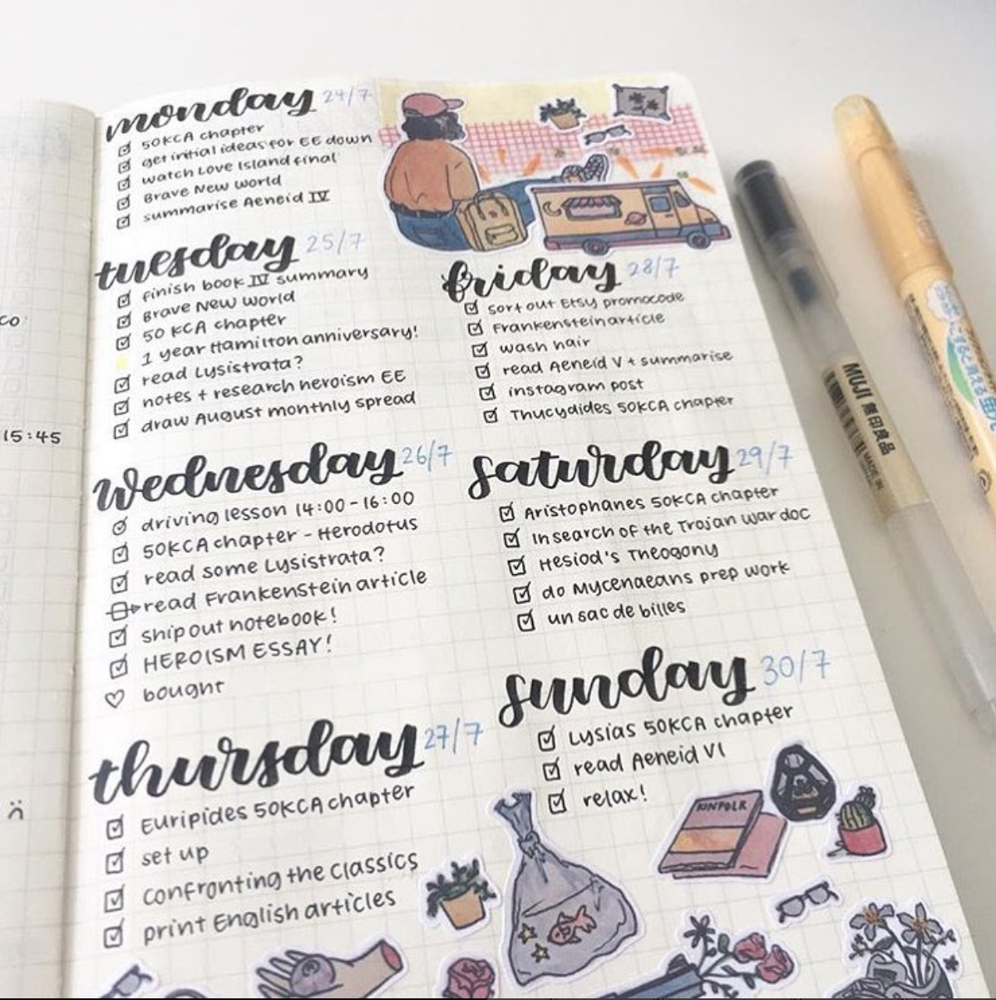
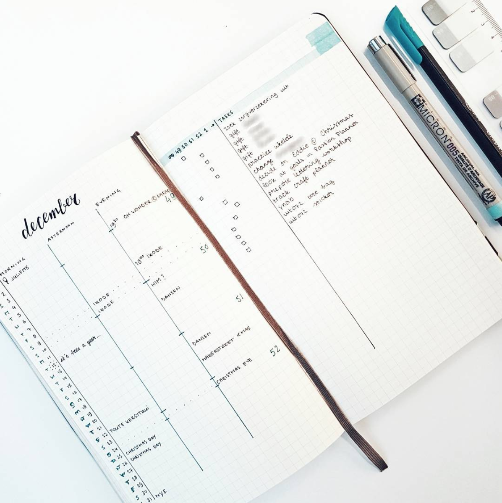

← Lena Renshaw
BujoInspo
I really enjoy bullet journaling, which is an organizational method using a notebook to combine a to-do list, planner, and journal all into one. It is typically done in a notebook with a dotted grid, hence the term "bullet" journaling. Below are some examples of journal spreads.
 Bullet journaling is lovely, but is sometimes prohibited by the difficulty of carrying a journal everywhere. At HackMIT in fall, 2017, my friend and I began working on an iOS app using Swift that would bring all of the features of bullet journaling to your phone. We implemented key features to accomodate those who found it theraputic to connect pen to paper, as well as those who wanted to do away with the journal entirely. These features included:
- Suggested layouts based on user needs (daily, weekly, or monthly spreads, minimalist or colorful, relaxed or busy week, etc)
- Quote generator based on different moods
- In-phone daily, weekly, and monthly spreads, as well as to-do lists and journaling features
- Auto-sync with Google Calendar to import events


© Lena Renshaw 2018